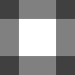
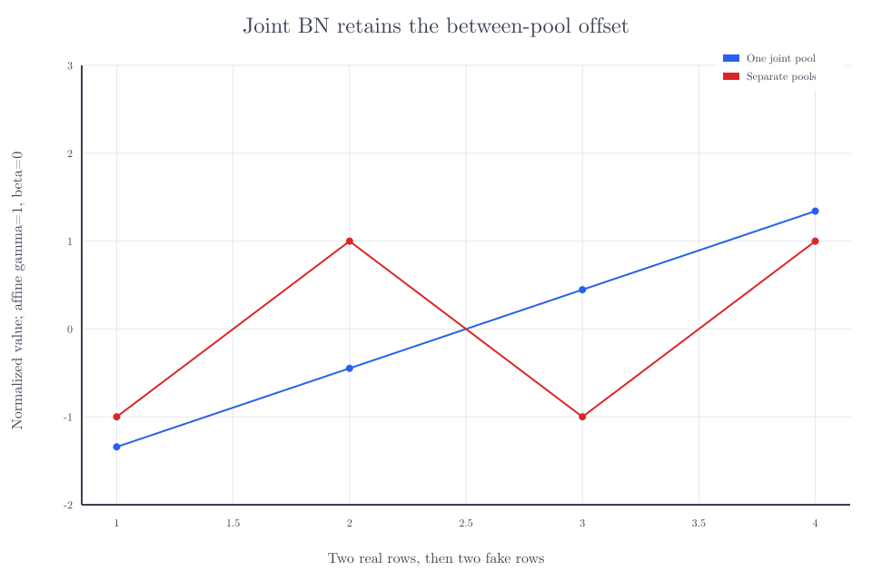
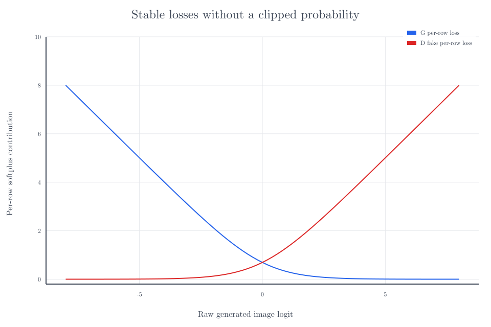
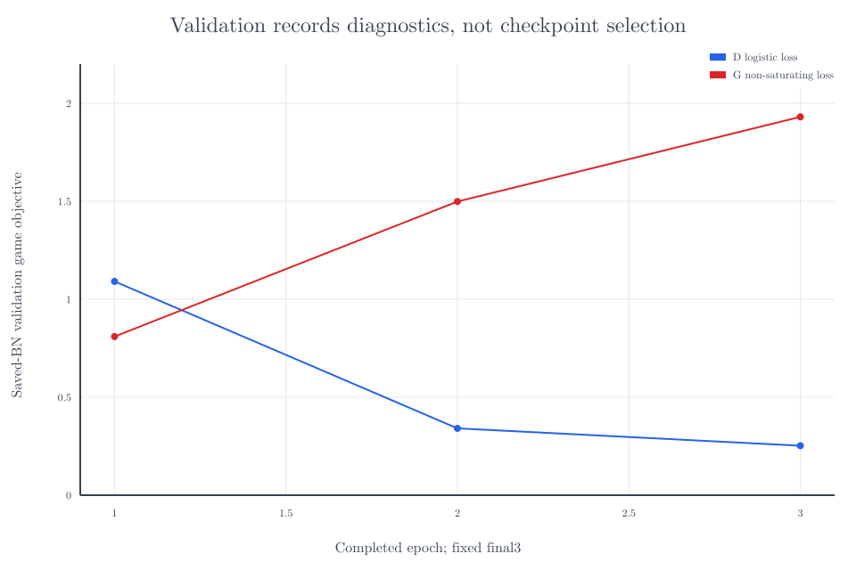
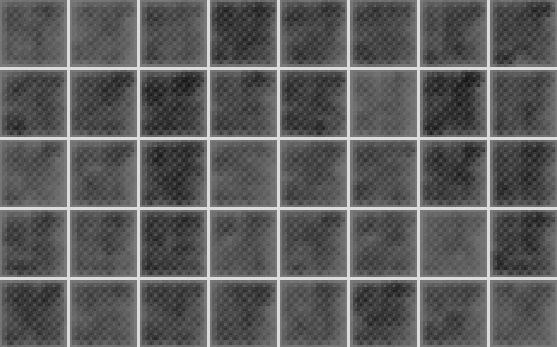
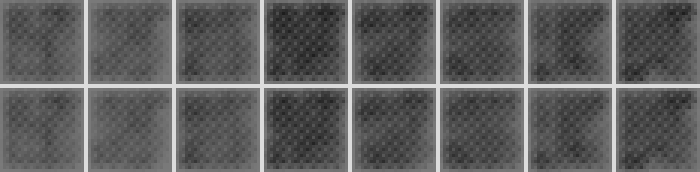
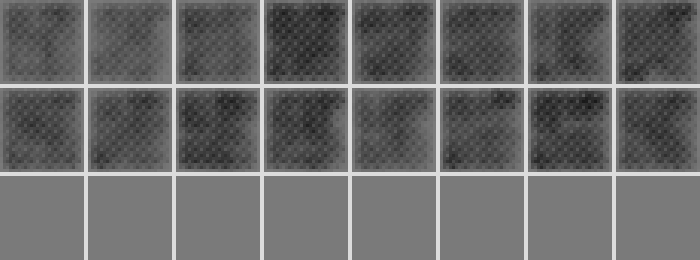
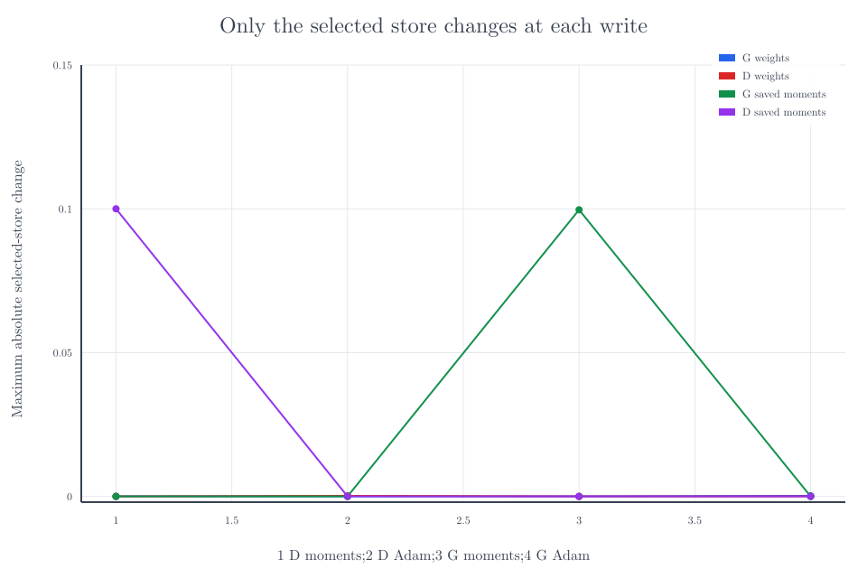
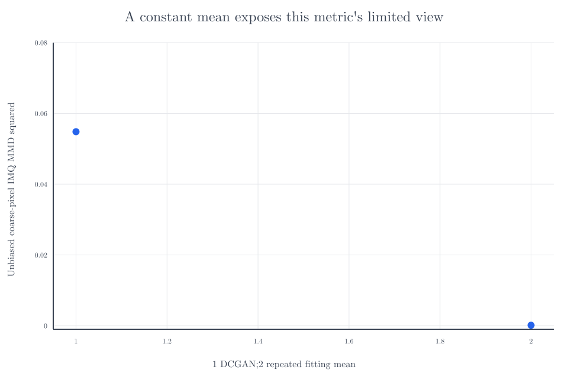

DCGAN: Transposed Maps and Two Batch-Normalization Phases
Abstract
A compact convolutional generator maps sixteen Gaussian coordinates to signed28x28 pixels through two learned stride-two transposed convolutions. A strided discriminator scores real and generated images with a stable logistic game. Each D phase normalizes one concatenated real/fake batch while stopping G; the following fresh G phase uses G batch statistics and the updated D's saved statistics. The editable native program shows all four stores, moment captures, Double.9 moving updates and two Adam states. It fits1000 balanced MNIST digits for three fixed epochs, visits every fitting row once per epoch and preserves the original checkpoint, scores, samples and diagnostics. The short run produces weak blurry structures, and coarse-pixel MMD remains much worse than a repeated fitting-mean baseline. D's game accuracy does not measure sample quality.
Follow the learned spatial maps and the two normalization conventions
[Radford, Metz and Chintala (2015/2016)](https://arxiv.org/abs/1511.06434) introduced the DCGAN architecture family. This is a small teaching variant with only 8/4 generator channels and4/8 discriminator channels, rather than a reproduction of the paper's full architectures or image-quality benchmarks. No true digit labels enter fitting. Bias-free projection16→392 reshapes to7x7x8; G then learns two4x4, stride-two transposed maps to14x14x4 and28x28x1. D learns two4x4 stride-two maps back to14x14x4 and7x7x8, then a raw scalar head. Kernels start from normal(.02); BN gamma/beta start1/0. G has6873 optimized values, D989. Their saved BN means and variances add40 values; all21 tensors are checkpointed.
#include <dm/dm.hpp>
int main() {
std::filesystem::create_directories("build");
dm::graphics::Diagram d(48, 1400);
dm::graphics::DiagramNodeStyle a;
a.width = 9.5;
a.height = 4.6;
a.font_size = 44;
d.node("z", {-24, 0}, "Gaussian z (16)", a)
.node("stem", {-12, 0}, "Projection 7x7x8\nBN + ReLU", a)
.node("up", {0, 0}, "Transpose 4x4 / 2\n14x14x4\nBN + ReLU", a)
.node("pixels", {12, 0}, "Transpose 4x4 / 2\n28x28x1 tanh", a)
.node("d", {24, 0}, "Strided D + head\nJoint BN for D\nSaved BN for G", a)
.node("real", {24, 12}, "Real unit pixels\n2 * image - 1", a)
.node(
"state",
{-12, -12},
"G moments: 24 values\nD moments: 16 values\nSeparate saved stores",
a)
.node("phase", {0, -12}, "D BN → D Adam\nFresh G → G Adam", a)
.edge("z", "stem")
.edge("stem", "up")
.edge("up", "pixels")
.edge("pixels", "d")
.edge("real", "d")
.edge("state", "stem")
.edge("state", "d")
.edge("phase", "state")
.edge("phase", "d")
.save_svg("build/dcgan_method.svg");
}
Check what a stride-two transposed convolution actually adds
A transposed convolution scatters a learned kernel around each input location and adds overlaps. It does not repeat pixels and does not invert a downsampling map. For a2x2 field of ones, an all-one4x4 kernel, SAME padding and stride2, the4x4 output counts are1 at corners,2 along other border positions and4 inside. The image divides counts by4 only for display; the printed values remain the raw sums. The actual G learns8→4 and4→1 kernels, then applies BN/ReLU and tanh as described.
#include <dm/dm.hpp>
int main() {
namespace n = dm::nn;
auto x = n::ones({1, 2, 2, 1}), w = n::ones({4, 4, 1, 1});
auto out = n::conv2d_transpose(x, w, n::conv_options(2, n::Padding::Same));
auto expected =
n::tensor({1., 2., 2., 1., 2., 4., 4., 2., 2., 4., 4., 2., 1., 2., 2., 1.}, {1, 4, 4, 1});
if (!n::equal_bits(out, expected))
throw std::runtime_error("transpose hand counts");
std::print("Raw overlap counts: {}\n", out.values_str());
n::save_image_grid(out / 4., "build/dcgan_transpose.png", 1, 0, 1, 4, 220 / 255., 32);
}Raw overlap counts: [[[[1], [2], [2], [1]], [[2], [4], [4], [2]], [[2], [4], [4], [2]], [[1], [2], [2], [1]]]]

Joint real/fake BN is different from normalizing two pools separately
Take one-channel real values(1,3) and fake values(5,7). Their joint mean is4,
population variance5 and sample variance20/3. Separate means2 and6 erase the
between-pool offset. The source normalizes with population variance plus Double
.001 but captures sample variance for the moving update. Starting from saved
mean0/variance1, retention.9 gives next mean.4 and variance about1.5666667.
capture_affine_batch_norm delegates to native fused BN and returns detached
captures without writing those candidates. Its output retains input/gamma/beta
paths. Saved BN stops the moment paths. These are the original fused arithmetic
and [sample-variance capture conventions](https://www.tensorflow.org/api_docs/python/tf/raw_ops/FusedBatchNormV3).
#include <dm/dm.hpp>
int main() {
namespace n = dm::nn;
auto t = n::DType::Float64;
n::ParameterStore p(0, t), s(0, t);
auto x = n::tensor({1., 3., 5., 7.}, {4, 1}, t);
auto joint = n::capture_affine_batch_norm(p, s, "bn", x, true);
auto first = n::capture_affine_batch_norm(p, s, "bn", n::slice_axis(x, 0, 0, 2), true);
auto second = n::capture_affine_batch_norm(p, s, "bn", n::slice_axis(x, 0, 2, 4), true);
auto separate = n::concat({first.value, second.value}, 0);
auto next = n::batch_norm_moving_values(
s.at("bn/moving_mean"), s.at("bn/moving_var"), joint.mean, joint.unbiased_variance, .9);
if (joint.mean.item() != 4 || std::abs(joint.unbiased_variance.item() - 20. / 3) > 1e-12 ||
s.at("bn/moving_mean").item() != 0)
throw std::runtime_error("joint BN hand moments");
std::print(
"Joint mean={}, sample variance={}; detached candidate mean={}, variance={}. Saved state "
"remains0/1.\n",
joint.mean.item(),
joint.unbiased_variance.item(),
next.mean.item(),
next.variance.item());
auto plot = dm::graphics::RPlot::create();
plot.y_limits(-2, 3)
.lines({1., 2., 3., 4.}, joint.value.to_vector<double>(), "One joint pool", {37, 99, 235}, 2)
.points({1., 2., 3., 4.}, joint.value.to_vector<double>(), "", {37, 99, 235}, 4)
.lines({1., 2., 3., 4.}, separate.to_vector<double>(), "Separate pools", {220, 38, 38}, 2)
.points({1., 2., 3., 4.}, separate.to_vector<double>(), "", {220, 38, 38}, 4)
.x_label("Two real rows, then two fake rows")
.y_label("Normalized value; affine gamma=1, beta=0")
.title("Joint BN retains the between-pool offset")
.save_svg("build/dcgan_joint_bn.svg");
}Joint mean=4, sample variance=6.666666666666667; detached candidate mean=0.3999999999999999, variance=1.5666666666666664. Saved state remains0/1.

Use raw logits for a numerically stable game
D minimizes mean softplus(-real_logit)+mean softplus(fake_logit); G minimizes mean softplus(-fake_logit). The means are separate by pool. There is no sigmoid followed by a clipped logarithm in these objectives. At a strongly negative fake logit, the non-saturating G derivative stays close to-1 per example, rather than vanishing. The full program also checks the original extreme±80 probes and stores all four logit derivatives. Probabilities are separate diagnostics.
#include <dm/dm.hpp>
int main() {
namespace n = dm::nn;
std::vector<double> score;
for (int i = 0; i <= 80; ++i)
score.push_back(-8. + i * .2);
auto x = n::from_vector(score, {81});
auto g = n::softplus(-x), d = n::softplus(x);
auto plot = dm::graphics::RPlot::create();
plot.y_limits(-.2, 10)
.lines(score, g.to_vector<double>(), "G per-row loss", {37, 99, 235}, 2)
.lines(score, d.to_vector<double>(), "D fake per-row loss", {220, 38, 38}, 2)
.x_label("Raw generated-image logit")
.y_label("Per-row softplus contribution")
.title("Stable losses without a clipped probability")
.save_svg("build/dcgan_logistic.svg");
}
Prepare balanced source pools through the native data API
The native MNIST preparation produces1000 fitting,200 validation and200 test images, balanced across ten source classes. Source IDs prove that pools are disjoint and respect the original train/test boundary. Labels are used only for this preview. Pixels remain grayscale and divide by255 in Float32; there is no threshold, crop or resize. Only D's real input maps to signed pixels2*x-1. Noise seeds are4823(validation),4831(test),4862/4863/4864(three fit epochs) and 4877(a held-out code-change control). BatchOrder uses4847, batch size32, and keeps the last8-row batch:32 steps per epoch,96 per optimizer.
#include <dm/dm.hpp>
int main() {
namespace n = dm::nn;
const auto root = std::filesystem::path(dm::datasets::data_home());
dm::datasets::prepare_example_data("mnist-assets", root);
auto pools = n::models::LoadSaliency(root / "saliency");
std::vector<std::int64_t> rows;
auto labels = pools[0].labels.to_vector<std::int64_t>();
for (int c = 0; c < 10; ++c) {
int count = 0;
for (std::size_t k = 0; k < labels.size() && count < 2; ++k)
if (labels[k] == c) {
rows.push_back(k);
++count;
}
}
n::save_image_grid(
n::take_rows(pools[0].images, rows), "build/dcgan_pools.png", 2, 0, 1, 4, 220 / 255., 3);
std::print(
"1000 fit /200 validation /200 test, balanced and disjoint; preview only uses labels.\n");
}1000 fit /200 validation /200 test, balanced and disjoint; preview only uses labels.

Keep every moving-state and optimizer write visible
The complete program below uses four stores and two Adam states: learning rate .0002, beta1=.5, beta2=.999, epsilon1e-8. D first captures its joint BN moments, commits only D state with explicit Double retention.9, and applies gradients only to D. G is then recomputed through the updated D using D's updated saved moments; G's two captures are committed before its selected Adam write. G's fake path is stopped during D. Neither component API performs these writes or a fitting loop.
All original artifacts are preserved. Additional first/final phase archives expose the actual full derivatives and captures; every fitting step checks that unselected stores stay bit exact. First-step effect sizes are saved separately. Final probes and generated-image controls leave all stores unchanged. Checkpoint restoration creates independent stores and verifies every tensor. Three validation rows log diagnostics; no validation/test score selects a checkpoint, seed or epoch.
#include <dm/dm.hpp>
namespace nn = dm::nn;
namespace m = nn::models;
using Arrays = std::map<std::string, nn::Tensor>;
using nn::Tensor;
namespace {
void Require(bool condition, const std::string& message) {
if (!condition)
throw std::runtime_error(message);
}
void Near(double actual, double expected, double tolerance, const std::string& message) {
Require(std::abs(actual - expected) <= tolerance, message);
}
void SaveArrays(const std::string& path, const Arrays& a) {
nn::save_npz(path, nn::NamedTensors(a.begin(), a.end()));
}
bool Equal(const Tensor& a, const Tensor& b) {
return nn::equal_bits(a, b);
}
bool Equal(const Arrays& a, const Arrays& b) {
if (a.size() != b.size())
return false;
for (const auto& [key, value] : a)
if (!b.count(key) || !Equal(value, b.at(key)))
return false;
return true;
}
Tensor Gaussian(std::int64_t rows, std::int64_t width, std::uint64_t seed) {
return nn::cast(
m::GaussianNoise({rows, width}, 1, seed).reshape({rows, width}), nn::DType::Float32);
}
double MaxAbsDiff(const Tensor& a, const Tensor& b) {
return nn::max(nn::abs(nn::cast(a, nn::DType::Float64) - nn::cast(b, nn::DType::Float64))).item();
}
void Finite(const Arrays& a, const std::string& message) {
for (auto& [key, v] : a)
for (double x : v.to_vector<double>())
Require(std::isfinite(x), message + key);
}
std::vector<std::int64_t> Range(std::int64_t count) {
std::vector<std::int64_t> r(count);
std::iota(r.begin(), r.end(), 0);
return r;
}
Arrays Fields(const m::DcganOutput& o) {
return {
{"fake", o.fake},
{"real_logit", o.real_logit},
{"fake_logit", o.fake_logit},
{"real_probability", o.real_probability},
{"fake_probability", o.fake_probability},
{"discriminator_loss", o.d_loss},
{"generator_loss", o.g_loss}};
}
Arrays TrainingFields(const m::DcganPhaseOutput& a, const m::DcganPhaseOutput& b) {
return {
{"d_train_logits", nn::concat({a.real_logit, a.fake_logit}, 0)},
{"d_for_g_logits", b.fake_logit},
{"g_train_signed", b.fake},
{"discriminator_loss", a.loss},
{"generator_loss", b.loss},
{"g/stem_bn/batch_mean", b.stem_mean},
{"g/stem_bn/batch_var", b.stem_variance},
{"g/up14_bn/batch_mean", b.up14_mean},
{"g/up14_bn/batch_var", b.up14_variance},
{"d/down7_bn/batch_mean", a.down7_mean},
{"d/down7_bn/batch_var", a.down7_variance}};
}
/// Logistic GAN algebra at extreme logits: finite losses and gradients, and
/// a strong non-saturating G gradient when D is confident a sample is fake.
void Algebra(const std::filesystem::path& root) {
Tensor real = nn::tensor({-80, -2, 2, 80}, {4, 1}), fake = nn::tensor({80, 2, -2, -80}, {4, 1});
real.requires_grad_();
fake.requires_grad_();
const auto loss = m::LogisticGanObjectives(real, fake);
const auto dg = nn::grad(loss.discriminator, {real, fake});
const auto gg = nn::grad(loss.generator, {fake});
const Arrays out{
{"discriminator_loss", loss.discriminator.detach()},
{"generator_loss", loss.generator.detach()},
{"d_real_gradient", dg[0]},
{"d_fake_gradient", dg[1]},
{"g_fake_gradient", gg[0]}};
Finite(out, "extreme logits finite GAN loss/gradients");
Require(gg[0].at({3, 0}) < -.24, "non-saturating G has strong gradient when D confident fake");
std::cout << "logistic algebra: D loss=" << loss.discriminator.item()
<< ", G loss=" << loss.generator.item() << ", dD/dreal=" << dg[0].values_str()
<< ", dG/dfake=" << gg[0].values_str() << '\n';
auto saved = out;
saved.emplace("real", real.detach());
saved.emplace("fake", fake.detach());
SaveArrays((root / "logistic_algebra.npz").string(), saved);
}
double Value(const Arrays& a, const std::string& key) {
return a.at(key).item();
}
/// The fit-pool mean image repeated n times, [n, 784].
Tensor FitMean(const Tensor& fit, std::int64_t n) {
return nn::tile(nn::mean(nn::reshape(fit, {-1, 784}), {0}, true), {n, 1});
}
void SaveSheet(const std::filesystem::path& path, const Tensor& images, std::int64_t cols) {
// tflow's Mosaic: 3x pixels, 4-pixel gaps of gray 220.
nn::save_image_grid(
nn::reshape(images, {-1, 28, 28, 1}), path.string(), cols, 0, 1, 4, 220 / 255., 3);
}
} // namespace
int main() {
const std::filesystem::path root = "build/dcgan";
const int epochs = 3;
const auto data = std::filesystem::path(dm::datasets::data_home()) / "saliency";
dm::datasets::prepare_example_data("mnist-assets", data.parent_path());
const auto pools = m::LoadSaliency(data);
std::filesystem::create_directories(root);
Algebra(root);
const Tensor validation_z = Gaussian(200, 16, 4823), test_z = Gaussian(200, 16, 4831);
nn::ParameterStore g(5003), d(5011), gs(0), ds(0);
std::vector<nn::ParameterStore*> stores{&g, &d, &gs, &ds};
const std::vector<std::string> prefixes{"0/", "1/", "g_state/", "d_state/"};
{
nn::NoGradGuard guard;
m::Dcgan(g, d, gs, ds, nn::zeros({2, 28, 28, 1}), nn::zeros({2, 16}));
}
auto snapshot = [&]() {
Arrays a;
for (int k = 0; k < 4; ++k)
for (const auto& key : stores[k]->names())
a.emplace(prefixes[k] + key, stores[k]->at(key).detach().clone());
return a;
};
auto train_evaluate = [&](const Tensor& x, const Tensor& z) {
nn::NoGradGuard guard;
return TrainingFields(
m::DcganDiscriminatorPhase(g, d, gs, ds, x, z), m::DcganGeneratorPhase(g, d, gs, ds, x, z));
};
auto capture = [&](int group, const Tensor& x, const Tensor& z) {
auto out = group ? m::DcganDiscriminatorPhase(g, d, gs, ds, x, z)
: m::DcganGeneratorPhase(g, d, gs, ds, x, z);
auto values = nn::grad(out.loss, stores[group]->parameters());
Arrays a;
auto names = stores[group]->names();
for (std::size_t k = 0; k < names.size(); ++k)
a.emplace(prefixes[group] + names[k], values[k]);
return a;
};
auto evaluate = [&](const Tensor& x, const Tensor& z) {
nn::NoGradGuard guard;
auto out = Fields(m::Dcgan(g, d, gs, ds, x, z));
out.emplace(
"pixel_mmd", m::ImqMmd(m::GanCoarsePixels(x), m::GanCoarsePixels(out.at("fake"))).value);
return out;
};
auto commit = [&](nn::ParameterStore& state,
const std::string& name,
const Tensor& mean,
const Tensor& var) {
auto next = nn::batch_norm_moving_values(
state.at(name + "/moving_mean"), state.at(name + "/moving_var"), mean, var, .9);
state.set(name + "/moving_mean", next.mean);
state.set(name + "/moving_var", next.variance);
};
nn::OptimizerConfig config;
config.kind = nn::OptimizerKind::Adam;
config.beta1 = .5;
config.beta2 = .999;
config.epsilon = 1e-8;
nn::Optimizer go(g, .0002, config), disc(d, .0002, config);
std::vector<nn::Optimizer*> optimizers{&go, &disc};
std::ofstream effects(root / "phase-effects.tsv");
effects.precision(17);
effects << "phase\tG\tD\tG_state\tD_state\n";
auto check_owner = [&](const Arrays& before,
const Arrays& after,
int owner,
const std::string& phase,
bool record) {
double changes[4]{};
for (int k = 0; k < 4; ++k)
for (const auto& [key, value] : before)
if (key.rfind(prefixes[k], 0) == 0) {
double change = MaxAbsDiff(value, after.at(key));
changes[k] = std::max(changes[k], change);
if (k != owner)
Require(Equal(value, after.at(key)), "unselected phase owner unchanged");
}
Require(changes[owner] > 0, "selected owner changed");
if (record)
effects << phase << '\t' << changes[0] << '\t' << changes[1] << '\t' << changes[2] << '\t'
<< changes[3] << '\n';
};
Require(
g.count() == 6873 && d.count() == 989 && g.size() + d.size() == 15 &&
gs.size() + ds.size() == 6,
"G 6873 + D 989 = 7862 parameters, 15 trainable tensors + 6 BN state variables");
SaveArrays((root / "initial_arrays.npz").string(), snapshot());
SaveArrays((root / "probe-initial.npz").string(), snapshot());
nn::BatchOrder order(1000, 32, 4847);
std::ofstream history(root / "history.tsv"), batches(root / "batches.tsv");
history.precision(17);
history << "epoch\tvalidation_discriminator_loss\tvalidation_generator_loss\tvalidation_coarse_"
"pixel_mmd\n";
batches << "epoch\tstep\trow\tsource_id\n";
const auto source = nn::cast(pools[0].source, nn::DType::Int64).to_vector<std::int64_t>();
int steps = 0;
const auto started = std::chrono::steady_clock::now();
for (int epoch = 1; epoch <= epochs; ++epoch) {
const Tensor noise = Gaussian(1000, 16, 4861 + epoch);
order.begin_epoch();
int seen = 0;
for (;;) {
const auto rows = order.next();
if (rows.empty())
break;
const Tensor x = nn::take_rows(pools[0].images, rows), z = nn::take_rows(noise, rows);
if (!steps) {
const auto f = train_evaluate(x, z);
SaveArrays((root / "probe-first.npz").string(), f);
for (int group : {0, 1})
SaveArrays(
(root / ("probe-initial-gradient-" + std::to_string(group) + ".npz")).string(),
capture(group, x, z));
std::cout << "first batch (training BN): D loss=" << Value(f, "discriminator_loss")
<< ", G loss=" << Value(f, "generator_loss") << '\n';
}
for (int group : {1, 0}) {
const auto before = steps ? Arrays{} : snapshot();
// D uses one joint real/fake BN batch; G is recomputed AFTER the D write.
const auto phase = group ? m::DcganDiscriminatorPhase(g, d, gs, ds, x, z)
: m::DcganGeneratorPhase(g, d, gs, ds, x, z);
const auto before_state = snapshot();
if (group == 1)
commit(ds, "down7_bn", phase.down7_mean, phase.down7_variance);
else {
commit(gs, "stem_bn", phase.stem_mean, phase.stem_variance);
commit(gs, "up14_bn", phase.up14_mean, phase.up14_variance);
}
const auto after_state = snapshot();
check_owner(
before_state,
after_state,
group == 1 ? 3 : 2,
group == 1 ? "D moments" : "G moments",
!steps);
const auto gradient = nn::grad(phase.loss, stores[group]->parameters());
optimizers[group]->step(gradient);
check_owner(after_state, snapshot(), group, group == 1 ? "D Adam" : "G Adam", !steps);
if (!steps) {
SaveArrays(
(root / (group == 1 ? "probe-after-d.npz" : "probe-after-g.npz")).string(),
snapshot());
if (group == 1) {
SaveArrays((root / "probe-after-d-forward.npz").string(), train_evaluate(x, z));
SaveArrays((root / "probe-after-d-gradient-0.npz").string(), capture(0, x, z));
}
}
if (!steps) {
const auto after = snapshot();
bool changed = false;
for (const auto& [key, value] : before) {
const bool own = key.rfind(std::to_string(group) + "/", 0) == 0 ||
key.rfind(group == 0 ? "g_state/" : "d_state/", 0) == 0;
if (own)
changed |= !Equal(value, after.at(key));
else
Require(Equal(value, after.at(key)), "GAN step changes ONLY intended G or D group");
}
Require(changed, "intended GAN group updates");
}
}
for (auto row : rows)
batches << epoch << '\t' << steps << '\t' << row << '\t' << source[row] << '\n';
++steps;
seen += int(rows.size());
}
Require(seen == 1000, "all fitting MNIST examples ONCE per epoch");
const auto v = evaluate(pools[1].images, validation_z);
history << epoch << '\t' << Value(v, "discriminator_loss") << '\t' << Value(v, "generator_loss")
<< '\t' << Value(v, "pixel_mmd") << '\n';
std::cout << "epoch " << epoch << ": diagnostic D loss=" << Value(v, "discriminator_loss")
<< ", G loss=" << Value(v, "generator_loss")
<< ", coarse MMD=" << Value(v, "pixel_mmd") << std::endl;
}
const double seconds =
std::chrono::duration<double>(std::chrono::steady_clock::now() - started).count();
// Final probes (training-mode forward and both gradients) must not touch weights or BN states.
const auto probe_before = snapshot();
const auto probe_rows = Range(32);
const Tensor probe_x = nn::take_rows(pools[2].images, probe_rows),
probe_z = nn::take_rows(test_z, probe_rows);
SaveArrays((root / "probe-final-training.npz").string(), train_evaluate(probe_x, probe_z));
for (int group : {0, 1})
SaveArrays(
(root / ("probe-final-gradient-" + std::to_string(group) + ".npz")).string(),
capture(group, probe_x, probe_z));
Require(Equal(probe_before, snapshot()), "final gradient probes DO not update BN states/weights");
const auto checkpoint = (root / "final.npz").string();
SaveArrays(checkpoint, snapshot());
Require(
steps == 96 && go.iterations() == 96 && disc.iterations() == 96, "192 explicit Adam writes");
nn::ParameterStore rg(1), rd(2), rgs(0), rds(0);
std::vector<nn::ParameterStore*> restored{&rg, &rd, &rgs, &rds};
{
nn::NoGradGuard guard;
m::Dcgan(rg, rd, rgs, rds, nn::zeros({2, 28, 28, 1}), nn::zeros({2, 16}));
}
for (const auto& [key, value] : nn::load_npz(checkpoint))
for (int k = 0; k < 4; ++k)
if (key.rfind(prefixes[k], 0) == 0)
restored[k]->set(key.substr(prefixes[k].size()), value);
auto restored_arrays = [&]() {
Arrays a;
for (int k = 0; k < 4; ++k)
for (const auto& name : restored[k]->names())
a.emplace(prefixes[k] + name, restored[k]->at(name).detach().clone());
return a;
};
auto restored_evaluate = [&](const Tensor& x, const Tensor& z) {
nn::NoGradGuard guard;
auto a = Fields(m::Dcgan(rg, rd, rgs, rds, x, z));
a.emplace(
"pixel_mmd", m::ImqMmd(m::GanCoarsePixels(x), m::GanCoarsePixels(a.at("fake"))).value);
return a;
};
auto generate = [&](const Tensor& z) {
nn::NoGradGuard guard;
return nn::reshape((m::DcganGenerate(rg, rgs, z).image + 1.) * .5, {-1, 784});
};
Require(Equal(snapshot(), restored_arrays()), "all final G/D weights restore BIT EXACT");
const auto before = restored_arrays();
const auto output = restored_evaluate(pools[2].images, test_z);
const Tensor repeat = generate(test_z);
Require(
Equal(output.at("fake"), repeat), "noise-only generation BIT EXACT matches GAN evaluation");
const auto single = generate(nn::take_rows(test_z, {0})).to_vector<float>();
const auto all = repeat.to_vector<float>();
double parity = 0;
for (int i = 0; i < 784; ++i)
parity = std::max(parity, std::abs(double(single[i]) - all[i]));
Require(parity < 2e-6, "G single/batch parity");
const Tensor changed_images = generate(Gaussian(200, 16, 4877));
Require(!Equal(changed_images, repeat), "different noise affects G images");
const Tensor zero_images = generate(nn::zeros({200, 16}));
Require(!Equal(zero_images, repeat), "G not constant zero-latent mapping");
Require(Equal(before, restored_arrays()), "all G/D diagnostic generation immutable");
SaveArrays(
(root / "probe-noise-controls.npz").string(),
{{"changed", changed_images}, {"zero", zero_images}});
const Tensor fit_mean = FitMean(pools[0].images, 200);
const double mean_mmd =
m::ImqMmd(
m::GanCoarsePixels(nn::reshape(pools[2].images, {-1, 784})), m::GanCoarsePixels(fit_mean))
.value.item();
double real_accuracy = 0, fake_accuracy = 0;
const auto real_logit = output.at("real_logit").to_vector<float>(),
fake_logit = output.at("fake_logit").to_vector<float>();
for (int b = 0; b < 200; ++b)
real_accuracy += real_logit[b] >= 0, fake_accuracy += fake_logit[b] < 0;
const double mean_pixel = nn::mean(repeat).item();
const double pixel_variance = nn::mean(nn::square(repeat - nn::mean(repeat, {0}, true))).item();
SaveSheet(root / "generated.png", nn::slice_axis(repeat, 0, 0, 40), 8);
SaveSheet(root / "fit_mean.png", nn::slice_axis(fit_mean, 0, 0, 8), 8);
SaveArrays((root / "outputs.npz").string(), output);
std::ofstream meta(root / "metrics.json");
meta.precision(17);
meta << "{\"generator_parameters\":6873,\"discriminator_parameters\":989,\"epochs\":" << epochs
<< ",\"steps_per_group\":" << steps << ",\"optimizer_updates\":" << 2 * steps
<< ",\"test_discriminator_loss\":" << Value(output, "discriminator_loss")
<< ",\"test_generator_loss\":" << Value(output, "generator_loss")
<< ",\"test_coarse_pixel_mmd\":" << Value(output, "pixel_mmd")
<< ",\"fit_mean_coarse_pixel_mmd\":" << mean_mmd
<< ",\"test_discriminator_real_accuracy\":" << real_accuracy / 200
<< ",\"test_discriminator_fake_accuracy\":" << fake_accuracy / 200
<< ",\"generated_mean_pixel\":" << mean_pixel
<< ",\"generated_mean_per_pixel_variance\":" << pixel_variance
<< ",\"single_batch_max_error\":" << parity << ",\"training_seconds\":" << seconds << "}\n";
Require(bool(meta) && bool(history) && bool(batches) && bool(effects), "complete GAN artifacts");
history.close();
batches.close();
effects.close();
meta.close();
std::cout << "fixed FINAL epoch " << epochs
<< ", test D/G=" << Value(output, "discriminator_loss") << "/"
<< Value(output, "generator_loss") << ", coarse MMD=" << Value(output, "pixel_mmd")
<< ", mean baseline=" << mean_mmd << ", D real/fake accuracy=" << real_accuracy / 200
<< "/" << fake_accuracy / 200 << ", mean pixel=" << mean_pixel
<< ", pixel variance=" << pixel_variance
<< "; D then G/restore/noiseOnly/immutable PASS (training " << seconds
<< " s)\nArtifacts: " << root.string() << "\nAll dcgan checks passed.\n";
std::ifstream plot_file(root / "history.tsv");
std::string plot_header;
std::getline(plot_file, plot_header);
std::vector<double> plot_epoch, plot_d, plot_g;
double pe, pd, pg, pm;
while (plot_file >> pe >> pd >> pg >> pm) {
plot_epoch.push_back(pe);
plot_d.push_back(pd);
plot_g.push_back(pg);
}
auto plot = dm::graphics::RPlot::create();
plot.y_limits(0, 2.2)
.lines(plot_epoch, plot_d, "D logistic loss", {37, 99, 235}, 2)
.points(plot_epoch, plot_d, "", {37, 99, 235}, 4)
.lines(plot_epoch, plot_g, "G non-saturating loss", {220, 38, 38}, 2)
.points(plot_epoch, plot_g, "", {220, 38, 38}, 4)
.x_label("Completed epoch; fixed final3")
.y_label("Saved-BN validation game objective")
.title("Validation records diagnostics, not checkpoint selection")
.save_svg("build/dcgan_learning.svg");
}logistic algebra: D loss=41.1269, G loss=20.5635, dD/dreal=[[-0.25], [-0.220199], [-0.0298007], [-4.51213e-36]], dG/dfake=[[-4.51213e-36], [-0.0298007], [-0.220199], [-0.25]] first batch (training BN): D loss=1.42212, G loss=0.693163 epoch 1: diagnostic D loss=1.09095, G loss=0.809653, coarse MMD=0.113555 epoch 2: diagnostic D loss=0.34096, G loss=1.49879, coarse MMD=0.0739498 epoch 3: diagnostic D loss=0.252443, G loss=1.93104, coarse MMD=0.0544977 fixed FINAL epoch 3, test D/G=0.252165/1.99433, coarse MMD=0.0548266, mean baseline=0.000135779, D real/fake accuracy=1/0.98, mean pixel=0.323393, pixel variance=0.00169251; D then G/restore/noiseOnly/immutable PASS (training 0.615275 s) Artifacts: build/dcgan All dcgan checks passed.

Inspect all fixed-bank samples before interpreting game scores
The first40 rows of the fixed200-code test bank are shown without gallery selection. They are weak blurry structures with checkerboard-like textures rather than clear digit samples. Uniform interior overlap in the supplied all-one toy kernel does not guarantee smooth samples from learned filters and a fitted model. Test D/G losses are about.252165/1.994329, and D real/fake accuracy is 1/.98. Those accuracies measure this particular adversarial game, not realistic or diverse generation. Mean generated pixel.323393 and mean per-pixel variance .00169251 describe output intensity/variation, not semantic coverage.
#include <dm/dm.hpp>
int main() {
std::filesystem::copy_file(
"build/dcgan/generated.png",
"build/dcgan_generated.png",
std::filesystem::copy_options::overwrite_existing);
std::print("First40 fixed test codes, saved BN, no image selection.\n");
}First40 fixed test codes, saved BN, no image selection.

A constant fitting mean is a useful limited baseline
The next eight panels all repeat the fitting-pool mean image. This deliberately constant baseline has no learned distribution or diversity. Yet its coarse-pixel MMD on the real test pool is about.000135779, compared with the GAN's.054826617. The diagnostic averages nonoverlapping7x7 blocks into4x4 values, divides by4, and uses the unbiased signed IMQ MMD squared. It discards fine image structure; a constant mean can score very well. Neither a low number nor the GAN's game accuracy establishes realistic sampling. The baseline uses fitting pixels only.
#include <dm/dm.hpp>
int main() {
std::filesystem::copy_file(
"build/dcgan/fit_mean.png",
"build/dcgan_mean.png",
std::filesystem::copy_options::overwrite_existing);
std::print(
"Eight repeated fitting-mean images; no test pixels used to construct this baseline.\n");
}Eight repeated fitting-mean images; no test pixels used to construct this baseline.

Compare saved BN and batch BN at the same final weights
The top row below uses the saved inference moments. The bottom row uses batch moments computed from all200 fixed test codes; the displayed first eight rows are only a slice of that full batch. Both calls keep the checkpoint immutable. The training path depends on the other codes in its batch, whereas saved-BN generation is a noise-only map with source single/batch maximum error0.
#include <dm/dm.hpp>
int main() {
namespace n = dm::nn;
n::ParameterStore g(5003), s(0);
auto z = n::cast(
n::reshape(n::models::GaussianNoise({200, 16}, 1, 4831), {200, 16}), n::DType::Float32);
n::models::DcganGenerate(g, s, z);
for (const auto& [key, value] : n::load_npz("build/dcgan/final.npz")) {
if (key.rfind("0/", 0) == 0)
g.set(key.substr(2), value);
if (key.rfind("g_state/", 0) == 0)
s.set(key.substr(8), value);
}
n::NoGradGuard guard;
auto saved = n::models::DcganGenerate(g, s, z), batch = n::models::DcganGenerate(g, s, z, true);
auto images = n::concat(
{n::slice_axis((saved.image + 1.) * .5, 0, 0, 8),
n::slice_axis((batch.image + 1.) * .5, 0, 0, 8)},
0);
n::save_image_grid(images, "build/dcgan_bn_paths.png", 8, 0, 1, 4, 220 / 255., 3);
n::save_npz("build/dcgan/bn_paths.npz", {{"saved", saved.image}, {"batch", batch.image}});
std::print(
"Full200-code bank maximum signed-pixel BN-path difference: {}\n",
n::max(n::abs(saved.image - batch.image)).item());
}Full200-code bank maximum signed-pixel BN-path difference: 0.04315882921218872

Changing the code proves an active input path, not diversity quality
The first row uses the fixed test codes, the second uses seed4877, and the third uses all-zero codes. Every generated panel uses saved BN and the same restored weights. Different pixels establish that G is not a constant zero-latent map; this control does not demonstrate meaningful modes or good class coverage.
#include <dm/dm.hpp>
int main() {
namespace n = dm::nn;
std::map<std::string, n::Tensor> a, c;
for (const auto& [k, v] : n::load_npz("build/dcgan/outputs.npz"))
a.emplace(k, v);
for (const auto& [k, v] : n::load_npz("build/dcgan/probe-noise-controls.npz"))
c.emplace(k, v);
auto images = n::concat(
{n::slice_axis(a.at("fake"), 0, 0, 8),
n::slice_axis(c.at("changed"), 0, 0, 8),
n::slice_axis(c.at("zero"), 0, 0, 8)},
0);
n::save_image_grid(
n::reshape(images, {24, 28, 28, 1}), "build/dcgan_noise.png", 8, 0, 1, 4, 220 / 255., 3);
std::print("Controls retain every original200-row changed/zero prediction.\n");
}Controls retain every original200-row changed/zero prediction.

Check the four first-step write owners separately
For each selected write, all other stores must remain bit exact. The next plot shows maximum absolute changes for G weights, D weights, G saved moments and D saved moments in the first step's four writes. Every subsequent step repeats the ownership checks, so a shared-state mutation cannot hide behind a correct loss. Moment captures are taken before the selected write; no moment is recomputed using updated weights. State stores are not passed to either optimizer.
#include <dm/dm.hpp>
int main() {
std::ifstream f("build/dcgan/phase-effects.tsv");
std::string line;
std::getline(f, line);
std::vector<double> x, g, d, gs, ds;
double a, b, c, e;
int k = 0;
while (std::getline(f, line)) {
auto tab = line.find('\t');
std::istringstream row(line.substr(tab + 1));
row >> a >> b >> c >> e;
x.push_back(++k);
g.push_back(a);
d.push_back(b);
gs.push_back(c);
ds.push_back(e);
}
auto plot = dm::graphics::RPlot::create();
plot.y_limits(-.002, .15)
.lines(x, g, "G weights", {37, 99, 235}, 2)
.points(x, g, "", {37, 99, 235}, 4)
.lines(x, d, "D weights", {220, 38, 38}, 2)
.points(x, d, "", {220, 38, 38}, 4)
.lines(x, gs, "G saved moments", {16, 145, 74}, 2)
.points(x, gs, "", {16, 145, 74}, 4)
.lines(x, ds, "D saved moments", {147, 51, 234}, 2)
.points(x, ds, "", {147, 51, 234}, 4)
.x_label("1 D moments;2 D Adam;3 G moments;4 G Adam")
.y_label("Maximum absolute selected-store change")
.title("Only the selected store changes at each write")
.save_svg("build/dcgan_phases.svg");
}
Read the coarse diagnostic alongside its baseline and the images
The final comparison below recomputes both test-pool coarse MMD values from checkpoint outputs and fitting-pool pixels. It uses all200 test images in both comparisons and never fits on them. The GAN's larger discrepancy, weak samples and strong D scores are reported together; none is hidden by a gallery choice or best-epoch selection. These small models and three epochs illustrate state and gradient mechanics rather than establish a competitive generative benchmark.
#include <dm/dm.hpp>
int main() {
namespace n = dm::nn;
auto pools =
n::models::LoadSaliency(std::filesystem::path(dm::datasets::data_home()) / "saliency");
std::map<std::string, n::Tensor> out;
for (const auto& [k, v] : n::load_npz("build/dcgan/outputs.npz"))
out.emplace(k, v);
auto fit = n::tile(n::mean(n::reshape(pools[0].images, {-1, 784}), {0}, true), {200, 1});
auto x = n::models::GanCoarsePixels(pools[2].images),
g = n::models::GanCoarsePixels(out.at("fake")), m = n::models::GanCoarsePixels(fit);
auto gm = n::models::ImqMmd(x, g).value.item(), mm = n::models::ImqMmd(x, m).value.item();
std::print(
"| Fixed final checkpoint | Coarse IMQ MMD squared |\n|---|---:|\n| DCGAN | {} |\n| Fitting "
"mean repeated | {} |\n",
gm,
mm);
auto plot = dm::graphics::RPlot::create();
plot.y_limits(-.001, .08)
.points({1., 2.}, {gm, mm}, "", {37, 99, 235}, 6)
.x_label("1 DCGAN;2 repeated fitting mean")
.y_label("Unbiased coarse-pixel IMQ MMD squared")
.title("A constant mean exposes this metric's limited view")
.save_svg("build/dcgan_mmd.svg");
}| Fixed final checkpoint | Coarse IMQ MMD squared |
|---|---|
| DCGAN | 0.05482661724090576 |
| Fitting mean repeated | 0.00013577938079833984 |
